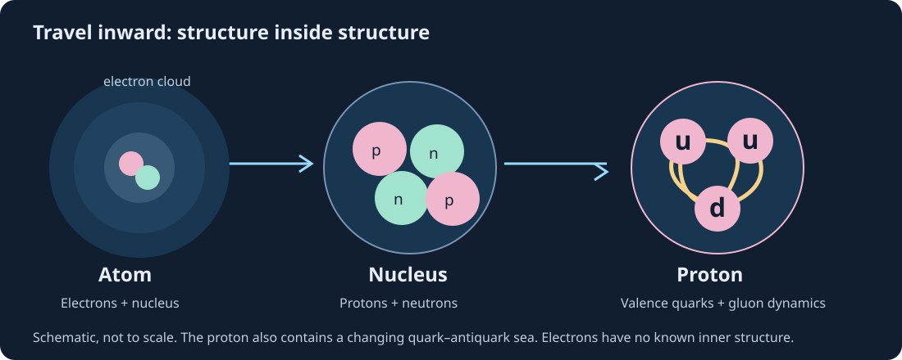
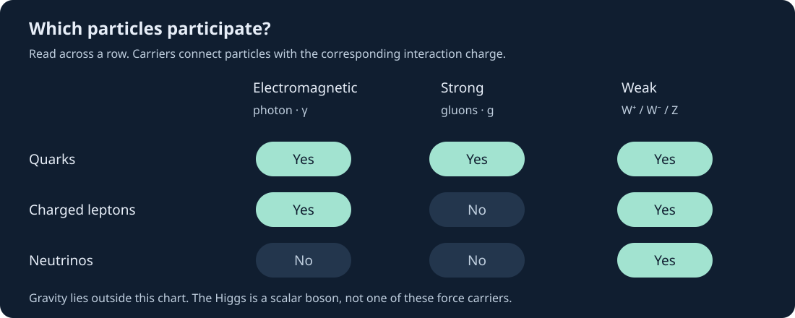
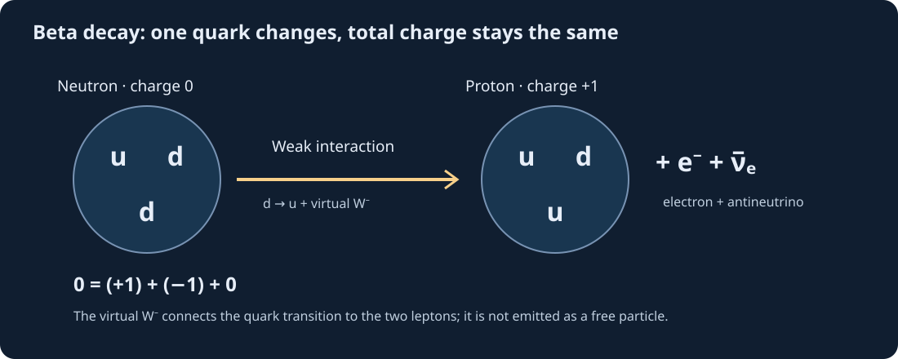

Nature’s smallest known building blocks · Grades 9–12
The Standard Model
A map of elementary particles and the interactions that connect them. Start with an atom. Travel inward. Discover why a proton is a composite object, but an electron is elementary.
01 / From familiar matter to quantum fields
What is elementary?
An atom contains electrons and a nucleus. The nucleus contains protons and neutrons. Protons and neutrons contain quarks, gluons, and additional quark–antiquark activity. Electrons and quarks have no known smaller constituents: we call them elementary particles.
The Standard Model is a quantum field theory. A field is something defined throughout space; a particle is a quantum excitation of a field. The chart below is a map of particle types, not a collection of tiny colored balls.
Your route inward
Atom → nucleus → proton / neutron → quarks + gluons
Electron → elementary
Learning goals: distinguish elementary and composite particles; recognize quarks, leptons, and bosons; explain charge in a proton; match interactions to carriers; identify what the model leaves unanswered.

- Fermion
- A particle with half-integer spin. Quarks and leptons have spin ½.
- Boson
- A particle with integer spin. Gauge bosons have spin 1; the Higgs has spin 0.
- Spin
- Intrinsic quantum angular momentum. It is not literal spinning of a tiny sphere.
- Charge
- A property governing an interaction. Electric charge and strong-interaction “color” charge are different.
02 / The particle atlas
One pattern. Three generations.
Each generation has two quarks, one charged lepton, and one neutrino flavor. Ordinary atoms use up quarks, down quarks, and electrons. The heavier charged fermions are unstable. Neutrinos are electrically neutral and interact weakly.
Gauge bosons & Higgs
Colors label families; they are not physical colors. This familiar 17-type chart groups all eight gluons into one box and W⁺/W⁻ into one box. Antiparticles add states, not another generation. Neutrino flavor states are mixtures of mass states, so a single exact mass is not assigned to each flavor here.
03 / Prediction → test → explain
Build the valence-quark core
Predict: how can fractional quark charges add up to a whole-number proton charge? Choose three valence quarks, then test the total. This is a charge bookkeeping model, not a complete picture of a nucleon.
Choose a combination, then test it.
Quarks carry color charge; isolated quarks are not observed because of confinement. A baryon is color neutral overall. Most proton and neutron mass comes from the energy of strong-interaction dynamics, rather than just the Higgs-generated masses of their quarks.
04 / What connects the particles?
Three interactions in the model
Choose a probe particle and an interaction. Predict whether it participates, then reveal the explanation. This simplified lab checks participation; it does not calculate collision probabilities or draw a literal path.

Make a prediction before revealing.
Carriers
- Photon: electromagnetic interaction; couples to electric charge.
- Gluons: strong interaction; couple to color charge and also to each other.
- W⁺, W⁻, Z: weak interaction. W processes can change quark flavor; Z processes do not change electric charge.
Electromagnetism and the weak interaction share an electroweak framework. The strong interaction is included too, but the Standard Model does not unify all three into one force.
A neutron’s beta decay
n → p + e⁻ + ν̅ₑ
At the quark level, a down quark becomes an up quark through the weak interaction. A virtual W⁻ connects this change to production of an electron and electron antineutrino.
Charge is conserved: 0 = (+1) + (−1) + 0. A virtual W is an internal part of the quantum calculation, not a freely traveling particle that the neutron can emit on its own.

05 / A tested theory with open questions
How do we know?
Evidence comes from detectors
Scattering experiments probe structure through angles and energies. Collider detectors record charged-particle tracks and energy deposits; physicists reconstruct possible decays statistically. A particle chart is an interpretation of evidence, not a photograph.
In 2012, ATLAS and CMS reported a new boson near 125 GeV/c². Subsequent measurements of its properties and interactions support its identification as a Higgs boson.
The Higgs field is not friction
The Higgs field has a nonzero vacuum value. Couplings to it give masses to W and Z bosons and charged fermions. The Higgs boson is an excitation of that field. Photons and gluons remain massless; moving through the vacuum does not slow particles down like a sticky fluid.
Where the map ends
- Gravity: described by general relativity, outside the Standard Model.
- Neutrino masses: oscillations demonstrate mass differences. The minimal original model has massless neutrinos, so it needs an extension.
- Dark matter: no established Standard Model particle accounts for the inferred cosmic dark matter.
- Matter–antimatter imbalance: the model does not fully explain the observed imbalance.
“Incomplete” does not mean “untested.” A theory can make extraordinarily successful predictions while leaving deeper questions open.
06 / Explain your reasoning
Check your particle map
Choose an answer, then read why. Retry any question; the goal is an explanation you can defend.
Exit ticket
A friend says: “A proton is elementary, the Higgs gives it all its mass, and gravity is carried by the Higgs.” Correct each claim using the particle atlas and the limits of the model.
Compare your explanation
A proton is composite: its valence content is uud, within a dynamic quark–gluon system. Most of its mass arises from strong-interaction energy. The Higgs is not the carrier of gravity; gravity is outside the Standard Model.
Continue exploring
Fundamental Forces · Quantum Physics labs · Standard Model Lagrangian in Equations Iceberg
Sources & teacher notes
Plan 45–60 minutes: foundations (10), atlas (10), charge and interaction investigations (15), evidence and discussion (10), exit ticket (5). Ask pairs to predict independently before revealing. No prior quantum mathematics is required.
- CERN: The Standard Model — particle families, interactions, and limits.
- CERN: The Higgs boson — field, discovery, and measured couplings.
- Particle Data Group — authoritative particle properties and reviews.
All lesson diagrams are original interface schematics. They depict categories and charge accounting, not particle sizes, orbits, or measured detector events.